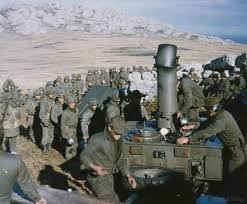
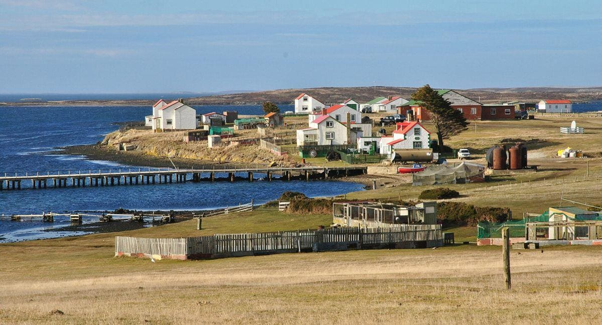
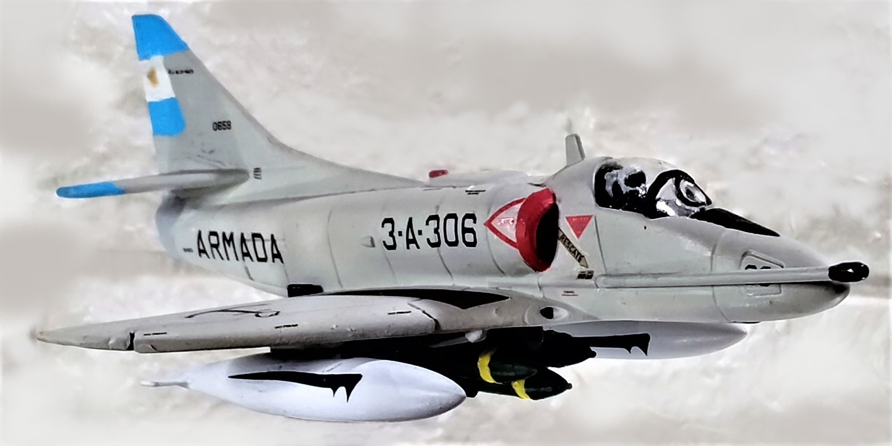
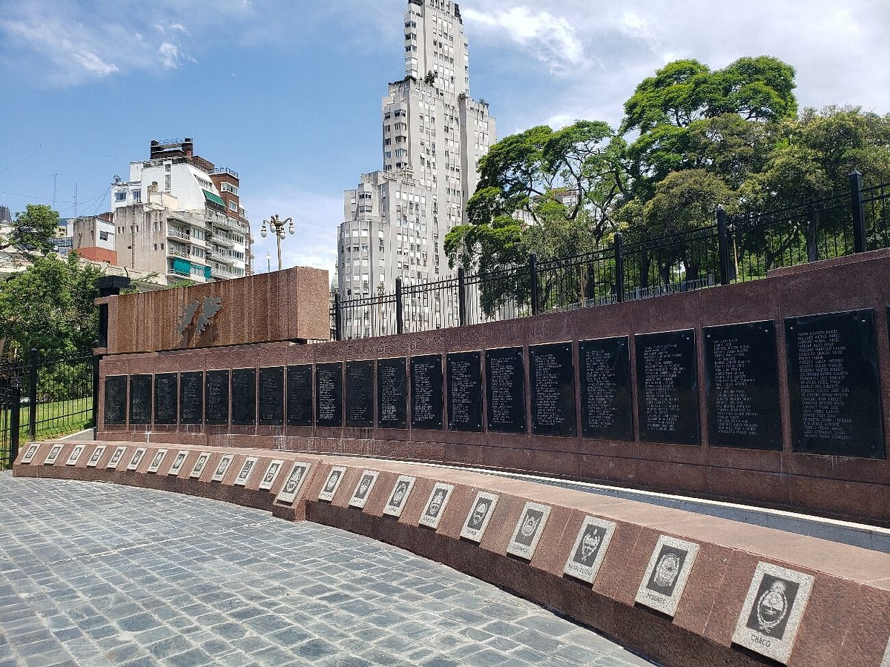
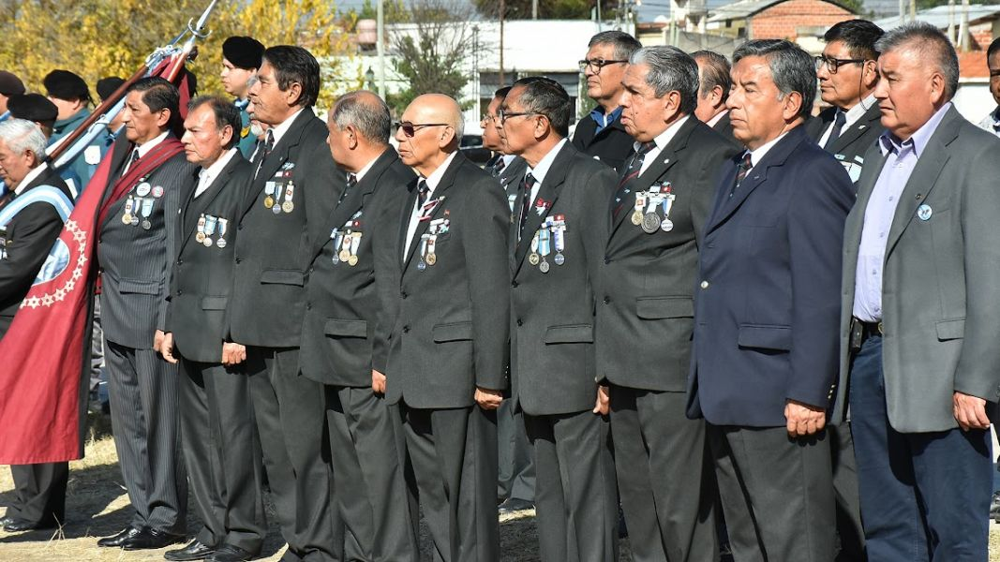
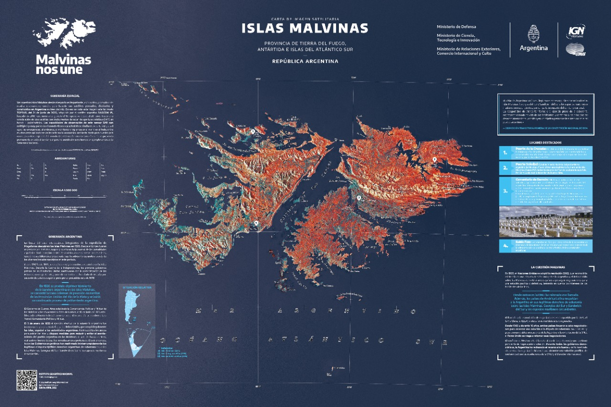

Soldados argentinos que en la Guerra de Malvinas de 1982 combatieron 23.812 personas. El 49% eran jóvenes conscriptos (soldados que cumplían el Servicio Militar Obligatorio) de entre 19 y 20 años sin experiencia militar. El conflicto dejó un saldo de 649 combatientes argentinos fallecidos

El paisaje de las Islas Malvinas es salvaje, ventoso y de una belleza agreste, muy similar al de la estepa patagónica. Está dominado por vastas llanuras onduladas, costas escarpadas, acantilados rocosos, turberas y montañas de escasa altura

Avion de la fuerza aerea argentina, el conflicto bélico de las Islas Malvinas fue un enfrentamiento armado entre la Argentina y el Reino Unido por la soberanía de las Islas Malvinas, Georgias del Sur y Sandwich del Sur, que tuvo lugar entre abril y junio de 1982. La guerra se inició cuando fuerzas argentinas ocuparon las islas, lo que llevó a una respuesta militar británica para recuperar el control. El conflicto resultó en la derrota argentina y tuvo importantes repercusiones políticas, sociales y económicas para ambos países.

Avión de la Fuerza Aérea.

Monumento a los Caídos en la Guerra de Malvinas.

Veteranos de Malvinas.

Malvinas, siempre Argentinas.